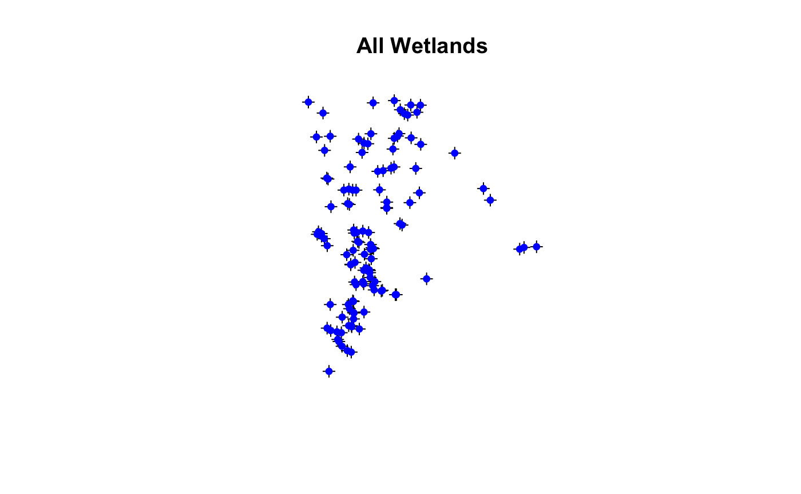
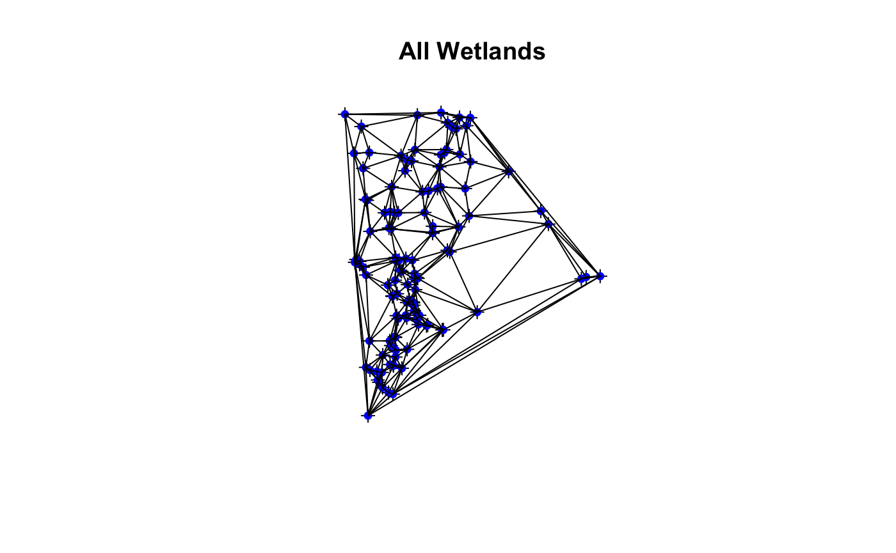
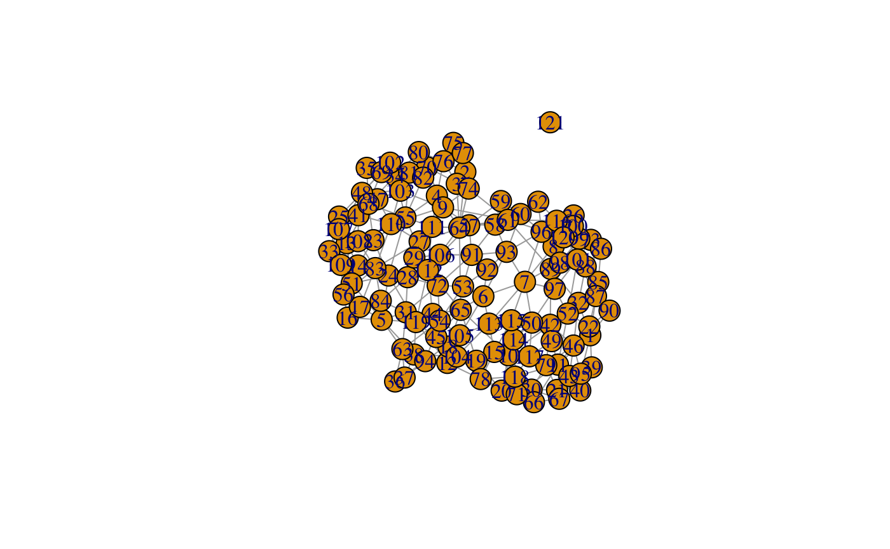
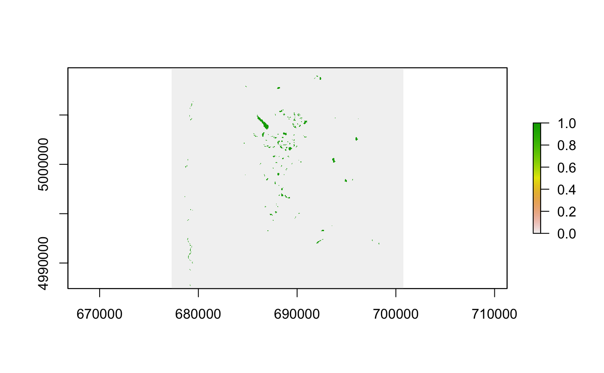
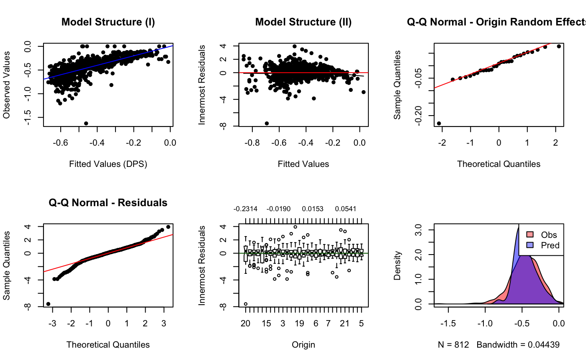

Week13_vignette.RmdThere are many ways graphs can be implemented to understand population structure and relate that structure to landscape characteristics (see Dyer and Nason 2004). In this exercise, we will calculate various graph metrics and apply graphs to fit a gravity model.
Gravity models are a type of inferential model that exploit graph characteristics. Gravity models include both at-site and between-site landscape data. They are a type of graph consisting of nodes and edges. These nodes and edges of landscape characteristics associated with these graph elements.
In this exercise, you will use the gravity model framework to build an empirical model of gene flow for the Columbia spotted frog dataset in central Idaho that you have used for several other exercises (Murphy et al. 2010).
Read in the wetland csv file.
wetlands <- read.csv(system.file("extdata", "Wetlands.csv", package = "LandGenCourse"), header = TRUE) str(wetlands)
## 'data.frame': 121 obs. of 5 variables:
## $ ID : int 1 2 3 4 5 6 7 8 9 10 ...
## $ X : int 688835 687460 687507 687637 688850 688500 687944 687872 687150 690888 ...
## $ Y : int 5002939 4994400 4994314 4994117 4997750 4998900 5000006 5000041 4995850 5004126 ...
## $ RALU : Factor w/ 2 levels "n","y": 2 1 1 1 1 2 2 1 1 1 ...
## $ SiteName: Factor w/ 121 levels "AirplaneLake",..: 1 2 3 4 5 6 7 8 9 10 ...Coerce to a SpatialPointsDataFrame and look at the structure of the related dataframe.
sp::coordinates(wetlands) <- ~X+Y class(wetlands)
## [1] "SpatialPointsDataFrame"
## attr(,"package")
## [1] "sp"str(wetlands)
## Formal class 'SpatialPointsDataFrame' [package "sp"] with 5 slots
## ..@ data :'data.frame': 121 obs. of 3 variables:
## .. ..$ ID : int [1:121] 1 2 3 4 5 6 7 8 9 10 ...
## .. ..$ RALU : Factor w/ 2 levels "n","y": 2 1 1 1 1 2 2 1 1 1 ...
## .. ..$ SiteName: Factor w/ 121 levels "AirplaneLake",..: 1 2 3 4 5 6 7 8 9 10 ...
## ..@ coords.nrs : int [1:2] 2 3
## ..@ coords : num [1:121, 1:2] 688835 687460 687507 687637 688850 ...
## .. ..- attr(*, "dimnames")=List of 2
## .. .. ..$ : chr [1:121] "1" "2" "3" "4" ...
## .. .. ..$ : chr [1:2] "X" "Y"
## ..@ bbox : num [1:2, 1:2] 686244 4993077 695699 5004317
## .. ..- attr(*, "dimnames")=List of 2
## .. .. ..$ : chr [1:2] "X" "Y"
## .. .. ..$ : chr [1:2] "min" "max"
## ..@ proj4string:Formal class 'CRS' [package "sp"] with 1 slot
## .. .. ..@ projargs: chr NAPlot the wetlands
plot(wetlands, asp=1, bty="n", xlab="", ylab="", main = "All Wetlands") points(wetlands, pch=19, cex=0.75, col="blue")

We’ll create a graph that could represent connectivity using Delaunay triangulation, then plot the result.
Delaunay triangulation, create delaunay graph
options(warn=-1) wetlandgraph <- deldir::deldir(coordinates(wetlands)[,1], coordinates(wetlands)[,2], z = wetlands$SiteName)
##
## PLEASE NOTE: The components "delsgs" and "summary" of the
## object returned by deldir() are now DATA FRAMES rather than
## matrices (as they were prior to release 0.0-18).
## See help("deldir").
##
## PLEASE NOTE: The process that deldir() uses for determining
## duplicated points has changed from that used in version
## 0.0-9 of this package (and previously). See help("deldir").options(warn=0)
Plot the graph with the wetlands
plot(wetlands, asp=1, bty="n", xlab="", ylab="", main = "All Wetlands") points(wetlands, pch=19, cex=0.75, col="blue") plot(wetlandgraph, wlines = "triang", wpoints="none", number=FALSE, add=TRUE, lty=1)

Questions:
What wetlands are connected to each other based on the Delaunay triangulation? Create an adjacency matrix from the graph object and make an adjacency matrix.
This graph, if it is ecologically meaningful contains information in the graph structure itself. Calculate graph metrics of degree and betweenness.
Questions:
Make an igraph network from the matrix we just made
wetnet <- igraph::graph_from_adjacency_matrix(adj, weighted = NULL, mode="undirected") plot(wetnet)

Calculate degree- the number of connections a node has
## ID RALU SiteName degree
## 1 1 y AirplaneLake 8
## 2 2 n AlpineInletCreek 6
## 3 3 n AlpineInletMeadow 4
## 4 4 n AlpineLake 6
## 5 5 n AxeHandleMeadow 9
## 6 6 y BachelorMeadow 7Calculate betweenness- the number of shortest paths going through a node
wetlands@data$betweenness <- igraph::betweenness(wetnet) head(wetlands@data)
## ID RALU SiteName degree betweenness
## 1 1 y AirplaneLake 8 279.58405
## 2 2 n AlpineInletCreek 6 87.97683
## 3 3 n AlpineInletMeadow 4 16.71910
## 4 4 n AlpineLake 6 117.72297
## 5 5 n AxeHandleMeadow 9 682.84635
## 6 6 y BachelorMeadow 7 292.32533Challenge:
Using the RALU_Site data, read in the data, add the node data (betweenness and degree) and create a shape file that includes the node data. This process will mirror part 1.
Questions: Look at the RALU_Site file.
Import site data
sites <- read.csv(system.file("extdata", "RALU_Site.csv", package = "LandGenCourse"), header = TRUE) head(sites)
## SiteID Elev Length Area Perim Depth pH Dforest Drock Dshrub
## 1 1 2473.719 101 6856.1 335.7 5.70 7.2 0.000 0.900 0.100
## 2 2 2609.068 350 36915.0 916.7 12.70 6.7 0.131 0.036 0.000
## 3 3 2622.113 0 1000.0 120.0 0.25 6.1 0.200 0.000 0.000
## 4 4 2474.737 336 38912.8 921.7 16.97 7.0 0.374 0.396 0.043
## 5 5 2589.805 107 6089.4 300.5 3.89 7.1 0.647 0.176 0.000
## 6 6 2463.088 68 3444.6 220.0 2.00 7.0 0.359 0.017 0.000
## SiteName X Y
## 1 Walkabout 688020 4993875
## 2 ParagonLake 687427 4994716
## 3 ParagonWetland 687170 4994770
## 4 RamshornLake 687914 4994972
## 5 Mt.WilsonLake 687645 4995325
## 6 MooseLake 688549 4995538Extract degree and betweenness from graph data
nodestats <- as.data.frame(wetlands@data[,3:5]) degree.betweenness <- nodestats[which(nodestats$SiteName %in% sites$SiteName),] head(degree.betweenness)
## SiteName degree betweenness
## 1 AirplaneLake 8 279.58405
## 6 BachelorMeadow 7 292.32533
## 7 BarkingFoxLake 9 512.37876
## 12 BobLake 6 466.35631
## 16 CacheLake 4 11.57913
## 25 DoeLake 5 31.48064Add to site data
## SiteName degree betweenness SiteID Elev Length Area Perim Depth
## 1 AirplaneLake 8 279.58405 27 2564.381 390 62582.2 1142.8 21.64
## 2 BachelorMeadow 7 292.32533 15 2591.781 0 225.0 60.0 0.40
## 3 BarkingFoxLake 9 512.37876 19 2545.275 160 12000.0 435.0 5.00
## 4 BobLake 6 466.35631 16 2649.125 143 4600.0 321.4 2.00
## 5 CacheLake 4 11.57913 10 2475.829 75 2268.8 192.0 1.86
## 6 DoeLake 5 31.48064 8 2463.006 170 13034.9 463.2 6.03
## pH Dforest Drock Dshrub X Y
## 1 6.5 0.398 0.051 0.00 688835 5002939
## 2 6.1 0.000 0.000 0.20 688500 4998900
## 3 6.5 0.400 0.250 0.05 687944 5000006
## 4 7.0 0.550 0.000 0.05 690127 4999150
## 5 6.5 0.508 0.000 0.00 688777 4997264
## 6 7.6 0.254 0.000 0.00 688968 4996458Note: Using names is dangerous as, small changes in names can result in non-matches. In this case, the ID fields are not consistent (data were collected at different times for different purposes originally). However, names are standardized in a drop-down list of a database. So they are a matching field. My preference is do to this type of operation on a numeric field.
coordinates(sites) <- ~X+Y str(sites)
## Formal class 'SpatialPointsDataFrame' [package "sp"] with 5 slots
## ..@ data :'data.frame': 29 obs. of 13 variables:
## .. ..$ SiteName : Factor w/ 121 levels "AirplaneLake",..: 1 6 7 12 16 25 31 32 33 36 ...
## .. ..$ degree : num [1:29] 8 7 9 6 4 5 6 6 5 3 ...
## .. ..$ betweenness: num [1:29] 279.6 292.3 512.4 466.4 11.6 ...
## .. ..$ SiteID : int [1:29] 27 15 19 16 10 8 11 31 9 12 ...
## .. ..$ Elev : num [1:29] 2564 2592 2545 2649 2476 ...
## .. ..$ Length : int [1:29] 390 0 160 143 75 170 100 0 91 65 ...
## .. ..$ Area : num [1:29] 62582 225 12000 4600 2269 ...
## .. ..$ Perim : num [1:29] 1143 60 435 321 192 ...
## .. ..$ Depth : num [1:29] 21.64 0.4 5 2 1.86 ...
## .. ..$ pH : num [1:29] 6.5 6.1 6.5 7 6.5 7.6 6.8 0 6.7 6.9 ...
## .. ..$ Dforest : num [1:29] 0.398 0 0.4 0.55 0.508 ...
## .. ..$ Drock : num [1:29] 0.051 0 0.25 0 0 0 0.163 0 0 0 ...
## .. ..$ Dshrub : num [1:29] 0 0.2 0.05 0.05 0 0 0 0 0 0 ...
## ..@ coords.nrs : int [1:2] 14 15
## ..@ coords : num [1:29, 1:2] 688835 688500 687944 690127 688777 ...
## .. ..- attr(*, "dimnames")=List of 2
## .. .. ..$ : chr [1:29] "1" "2" "3" "4" ...
## .. .. ..$ : chr [1:2] "X" "Y"
## ..@ bbox : num [1:2, 1:2] 686850 4993875 690900 5004222
## .. ..- attr(*, "dimnames")=List of 2
## .. .. ..$ : chr [1:2] "X" "Y"
## .. .. ..$ : chr [1:2] "min" "max"
## ..@ proj4string:Formal class 'CRS' [package "sp"] with 1 slot
## .. .. ..@ projargs: chr NAGet data as proper type. Are all of the data fields reading as the correct type?
summary(sites@data)
## SiteName degree betweenness SiteID
## AirplaneLake : 1 Min. :3.000 Min. : 0.00 Min. : 1.00
## BachelorMeadow: 1 1st Qu.:4.000 1st Qu.: 11.58 1st Qu.: 8.00
## BarkingFoxLake: 1 Median :5.000 Median : 47.29 Median :15.00
## BobLake : 1 Mean :5.448 Mean :149.86 Mean :15.76
## CacheLake : 1 3rd Qu.:6.000 3rd Qu.:274.32 3rd Qu.:24.00
## DoeLake : 1 Max. :9.000 Max. :512.38 Max. :31.00
## (Other) :23
## Elev Length Area Perim
## Min. :2390 Min. : 0.0 Min. : 0 Min. : 0.0
## 1st Qu.:2476 1st Qu.: 91.0 1st Qu.: 3526 1st Qu.: 237.7
## Median :2572 Median : 130.0 Median : 6556 Median : 335.7
## Mean :2563 Mean : 210.9 Mean : 24504 Mean : 564.5
## 3rd Qu.:2633 3rd Qu.: 235.0 3rd Qu.: 16601 3rd Qu.: 520.2
## Max. :2794 Max. :1660.0 Max. :353898 Max. :4312.9
##
## Depth pH Dforest Drock
## Min. : 0.000 Min. :0.000 Min. :0.0000 Min. :0.0000
## 1st Qu.: 2.000 1st Qu.:6.500 1st Qu.:0.0000 1st Qu.:0.0000
## Median : 3.570 Median :6.900 Median :0.3590 Median :0.0470
## Mean : 6.161 Mean :6.372 Mean :0.4785 Mean :0.1718
## 3rd Qu.: 6.000 3rd Qu.:7.000 3rd Qu.:0.5500 3rd Qu.:0.2130
## Max. :24.300 Max. :7.600 Max. :4.8450 Max. :0.9530
##
## Dshrub
## Min. :0.00000
## 1st Qu.:0.00000
## Median :0.00000
## Mean :0.01859
## 3rd Qu.:0.00000
## Max. :0.20000
## sites@data$SiteName <- as.character(sites@data$SiteName) class(sites@data$SiteName)
## [1] "character"## [1] "factor"Create graph from site locations and merge with genetic distance data.
To assess connectivity using a gravity model, we need to build a graph from the occupied frog sites. This could be any type of graph, but I generally use saturated or pruned by some maximum distance.
Note: make sure to use correct field here:
dist.graph <- GeNetIt::knn.graph(sites, row.names = sites@data[,"SiteID"]) #dist.graph@proj4string@projargs <- "+proj=utm +zone=11 +ellps=GRS80 +towgs84=0,0,0,-0,-0,-0,0 +units=m +no_defs " #dist.graph <- GeNetIt::knn.graph(sites, row.names = sites@data[,"SiteName"], max.dist=5000)
The “k greater than one-third of the number of data points” is a warning issued by the k nearest neighbor function. In our case, this is not a problem as we want a graph that k is equal to 1-n, that is a saturated graph.
This involves: reading in RALU_Dps genetic distance. Read in genetic distance file (RALU_Dps), convert to flow (1-distance) and unfold into a dataframe. Then merge graph with genetic distances.
Read in the genetic distance matrix
gdist <- read.csv(system.file("extdata", "RALU_Dps.csv", package = "LandGenCourse"), header=TRUE) rownames(gdist) <- t(names(gdist)) gdist <- as.matrix (gdist) head(gdist)
## X1 X2 X3 X4 X5 X6 X7 X8 X9
## X1 0.00000 0.13106 0.24000 0.10717 0.11773 0.11482 0.11978 0.22386 0.31478
## X2 0.13106 0.00000 0.15344 0.10157 0.16524 0.14467 0.13044 0.25668 0.27293
## X3 0.24000 0.15344 0.00000 0.18750 0.25417 0.27656 0.22935 0.31458 0.35767
## X4 0.10717 0.10157 0.18750 0.00000 0.18065 0.15483 0.12831 0.21910 0.25948
## X5 0.11773 0.16524 0.25417 0.18065 0.00000 0.11089 0.11491 0.26057 0.31374
## X6 0.11482 0.14467 0.27656 0.15483 0.11089 0.00000 0.08381 0.23851 0.27842
## X10 X11 X12 X13 X14 X15 X16 X18 X19
## X1 0.30506 0.26169 0.34715 0.27857 0.39477 0.36995 0.36053 0.29083 0.34259
## X2 0.30683 0.28459 0.35504 0.26397 0.37196 0.36541 0.35676 0.31283 0.31005
## X3 0.38631 0.34337 0.44137 0.34524 0.40587 0.40521 0.37579 0.42240 0.36712
## X4 0.26875 0.22184 0.33929 0.23413 0.36887 0.37743 0.32979 0.31647 0.26990
## X5 0.31012 0.29413 0.33393 0.26518 0.36171 0.36771 0.35540 0.31987 0.32218
## X6 0.27074 0.28646 0.29556 0.26167 0.36458 0.38211 0.35632 0.28228 0.33013
## X20 X21 X23 X24 X25 X26 X27 X28 X29
## X1 0.32208 0.39705 0.41417 0.36951 0.44451 0.47939 0.35175 0.39072 0.51191
## X2 0.24993 0.45253 0.41518 0.37476 0.45304 0.46454 0.37366 0.37362 0.49434
## X3 0.25417 0.54167 0.48735 0.48620 0.51667 0.45781 0.43750 0.43818 0.50388
## X4 0.20347 0.44643 0.43088 0.39755 0.46875 0.45087 0.38889 0.42681 0.47263
## X5 0.30010 0.45017 0.35466 0.32677 0.39583 0.46230 0.34107 0.41169 0.48235
## X6 0.30192 0.40980 0.37248 0.32394 0.39645 0.46567 0.33234 0.40289 0.49531
## X30 X31
## X1 0.50106 0.43008
## X2 0.50797 0.39241
## X3 0.53165 0.37708
## X4 0.54137 0.42292
## X5 0.44777 0.34762
## X6 0.46864 0.37533Convert genetic distance to flow
## X1 X2 X3 X4 X5 X6 X7 X8 X9
## X1 NA 0.86894 0.76000 0.89283 0.88227 0.88518 0.88022 0.77614 0.68522
## X2 0.86894 NA 0.84656 0.89843 0.83476 0.85533 0.86956 0.74332 0.72707
## X3 0.76000 0.84656 NA 0.81250 0.74583 0.72344 0.77065 0.68542 0.64233
## X4 0.89283 0.89843 0.81250 NA 0.81935 0.84517 0.87169 0.78090 0.74052
## X5 0.88227 0.83476 0.74583 0.81935 NA 0.88911 0.88509 0.73943 0.68626
## X6 0.88518 0.85533 0.72344 0.84517 0.88911 NA 0.91619 0.76149 0.72158
## X10 X11 X12 X13 X14 X15 X16 X18 X19
## X1 0.69494 0.73831 0.65285 0.72143 0.60523 0.63005 0.63947 0.70917 0.65741
## X2 0.69317 0.71541 0.64496 0.73603 0.62804 0.63459 0.64324 0.68717 0.68995
## X3 0.61369 0.65663 0.55863 0.65476 0.59413 0.59479 0.62421 0.57760 0.63288
## X4 0.73125 0.77816 0.66071 0.76587 0.63113 0.62257 0.67021 0.68353 0.73010
## X5 0.68988 0.70587 0.66607 0.73482 0.63829 0.63229 0.64460 0.68013 0.67782
## X6 0.72926 0.71354 0.70444 0.73833 0.63542 0.61789 0.64368 0.71772 0.66987
## X20 X21 X23 X24 X25 X26 X27 X28 X29
## X1 0.67792 0.60295 0.58583 0.63049 0.55549 0.52061 0.64825 0.60928 0.48809
## X2 0.75007 0.54747 0.58482 0.62524 0.54696 0.53546 0.62634 0.62638 0.50566
## X3 0.74583 0.45833 0.51265 0.51380 0.48333 0.54219 0.56250 0.56182 0.49612
## X4 0.79653 0.55357 0.56912 0.60245 0.53125 0.54913 0.61111 0.57319 0.52737
## X5 0.69990 0.54983 0.64534 0.67323 0.60417 0.53770 0.65893 0.58831 0.51765
## X6 0.69808 0.59020 0.62752 0.67606 0.60355 0.53433 0.66766 0.59711 0.50469
## X30 X31
## X1 0.49894 0.56992
## X2 0.49203 0.60759
## X3 0.46835 0.62292
## X4 0.45863 0.57708
## X5 0.55223 0.65238
## X6 0.53136 0.62467Convert genetid “flow” matrix into an unfolded dataframe with site IDs
gdist <- GeNetIt::dmatrix.df(gdist) head(gdist)
## X1 X2 distance
## 2 X2 X1 0.86894
## 3 X3 X1 0.76000
## 4 X4 X1 0.89283
## 5 X5 X1 0.88227
## 6 X6 X1 0.88518
## 7 X7 X1 0.88022The default column name is “distance” as this matrix could represent multiple type of distances. We are renaming here to avoid confusion as to the type of distance here.
## [1] "X1" "X2" "GDIST"Some housekeeping here to rename colums to from, to nodes and remove “X”s added in conversion from matrix.
names(gdist)[1] <- "FROM" names(gdist)[2] <- "TO" gdist[,1] <-sub("X", "", gdist[,1]) gdist[,2] <-sub("X", "", gdist[,2]) names(gdist)
## [1] "FROM" "TO" "GDIST"Create an identifier of to from nodes to connect back to the graph and link gdist data to knn graph.
gdist <- cbind(from.to=paste(gdist[,1], gdist[,2], sep="."), gdist) dist.graph@data$from.to <- paste(dist.graph$from_ID, dist.graph$to_ID, sep=".") dist.graph <- merge(dist.graph, gdist, by = "from.to") head(dist.graph@data)
## from.to i j from_ID to_ID length FROM TO GDIST
## 483 27.15 1 2 27 15 4052.869 27 15 0.47934
## 486 27.19 1 3 27 19 3065.350 27 19 0.61603
## 484 27.16 1 4 27 16 4003.222 27 16 0.63321
## 478 27.10 1 5 27 10 5675.296 27 10 0.51349
## 503 27.8 1 6 27 8 6482.365 27 8 0.51932
## 479 27.11 1 7 27 11 5010.120 27 11 0.50584Saving the results (as ASCII csv and lines shapefile) is is a really useful operation for your own data, especially if you have a large graph, so you don’t have to recreate this object.
if(!dir.exists(paste0(here::here(),"/output"))) dir.create(paste0(here::here(),"/output")) write.csv(gdist, file= paste0(here::here(),"/output/gdist.csv"))
Uncheck the following lines to write out a shapefile. This is commented out as rgdal may not work properly, depending on your computer configuration.
#rgdal::writeOGR(dist.graph, paste0(here::here(),"/output"), "DistGraph", # driver="ESRI Shapefile", check_exists=TRUE, overwrite_layer=TRUE)
This function will import a raster stack with nine raster maps of the study area.
xvars <- rio::import("https://www.dropbox.com/s/xjl9zpgqplwg1us/ralu.rasters.rds?dl=1") xvars
## class : RasterStack
## dimensions : 2237, 2347, 5250239, 9 (nrow, ncol, ncell, nlayers)
## resolution : 10, 10 (x, y)
## extent : 677292.5, 700762.5, 4987413, 5009783 (xmin, xmax, ymin, ymax)
## crs : +proj=utm +zone=11 +ellps=GRS80 +towgs84=0,0,0,-0,-0,-0,0 +units=m +no_defs
## names : cti, dd5, ffp, gsp, hli, nlcd, pratio, rough27, srr
## min values : 6.269518e-01, 2.864937e+02, 0.000000e+00, 1.966725e+02, 1.014000e+03, 1.100000e+01, 4.276079e-01, 5.816957e-04, 3.869545e-02
## max values : 2.605896e+01, 2.143000e+03, 1.170000e+02, 3.380697e+02, 1.000000e+04, 9.500000e+01, 5.329815e-01, 1.859006e+04, 7.725910e-01names(xvars)
## [1] "cti" "dd5" "ffp" "gsp" "hli" "nlcd" "pratio"
## [8] "rough27" "srr"You want to know if areas of dense wetlands produce more frogs. Calculate the proportion of the landscape around each site that is wetland. What buffer distance will you use?
We can create a wetland raster from the NLCD data. Wetland classes are 11 (open water), 90 and 95.
Create a vector of reclassification where non-wetland is a 0, wetland is a 1.
Reclassifying nlcd by the reclass matrix
wetlnd <- raster::reclassify(xvars$nlcd, reclass)
wetlnd@data@names <- "wetlnd"
plot(wetlnd)

Adding this new parameter to our raster stack
## [1] "cti" "dd5" "ffp" "gsp" "hli" "nlcd" "pratio"
## [8] "rough27" "srr" "wetlnd"Create a raster of the proportion of landscape (PLAND) that is wetland, using a 300 m radius.
Challenge:
Here we adapt code from Week 2 Worked Example.
nlcd_sampled <- landscapemetrics::sample_lsm(landscape = xvars[["wetlnd"]], what = "lsm_c_pland", shape = "circle", y = sites, size = 300, return_raster = FALSE, plot_id=sites@data$SiteID) pwetland <- dplyr::select(dplyr::filter(nlcd_sampled, class == 1, metric == "pland"), plot_id, value) names(pwetland) <- c("SiteID", "pwetland") pwetland$pwetland <- pwetland$pwetland/100 head(pwetland)
## # A tibble: 6 x 2
## SiteID pwetland
## <fct> <dbl>
## 1 2 0.0948
## 2 3 0.0835
## 3 4 0.102
## 4 5 0.0609
## 5 7 0.0516
## 6 8 0.108Important: there could be cases with no wetlands (where prop.landscape should be zero), which will result in missing rows in pwetland. Here we use left_join to join rows withi sites by SiteID, then replace missing values by 0.
sites@data <- dplyr::left_join(sites@data, pwetland)
## Joining, by = "SiteID"## SiteName degree betweenness SiteID Elev Length Area Perim Depth
## 1 AirplaneLake 8 279.58405 27 2564.381 390 62582.2 1142.8 21.64
## 2 BachelorMeadow 7 292.32533 15 2591.781 0 225.0 60.0 0.40
## 3 BarkingFoxLake 9 512.37876 19 2545.275 160 12000.0 435.0 5.00
## 4 BobLake 6 466.35631 16 2649.125 143 4600.0 321.4 2.00
## 5 CacheLake 4 11.57913 10 2475.829 75 2268.8 192.0 1.86
## 6 DoeLake 5 31.48064 8 2463.006 170 13034.9 463.2 6.03
## pH Dforest Drock Dshrub pwetland
## 1 6.5 0.398 0.051 0.00 0.195821530
## 2 6.1 0.000 0.000 0.20 0.015929204
## 3 6.5 0.400 0.250 0.05 0.051009564
## 4 7.0 0.550 0.000 0.05 0.000000000
## 5 6.5 0.508 0.000 0.00 0.004253811
## 6 7.6 0.254 0.000 0.00 0.107954545Challenge:
Add characteristics of sample sites from your rasters as potential at site variables. Here we are extracting the raster values that intersect our wetlands (point data). What raster is not included in this step? Why? What at-site characteristics may impact the production of potential migrants?
sites@data <- data.frame(sites@data, raster::extract(xvars, sites))
names(sites@data)
## [1] "SiteName" "degree" "betweenness" "SiteID" "Elev"
## [6] "Length" "Area" "Perim" "Depth" "pH"
## [11] "Dforest" "Drock" "Dshrub" "pwetland" "cti"
## [16] "dd5" "ffp" "gsp" "hli" "nlcd"
## [21] "pratio" "rough27" "srr" "wetlnd"Calculating statistical moments (e.g., mean, sdev) for categorical variables makes no sense. We we will remove them here.
Here we define the projection of the distance graph and then calculate statistics
You can calculate any statistical moment you wish from your sample of the landscape between nodes. Make sure that these moments are ecologically/biologically meaningful.
dist.graph@proj4string@projargs <- "+proj=utm +zone=11 +ellps=GRS80 +towgs84=0,0,0,-0,-0,-0,0 +units=m +no_defs " stats <- GeNetIt::graph.statistics(dist.graph, r = xvars[[-idx]], buffer= NULL, stats = c("min", "mean", "max", "var", "median")) dist.graph@data <- data.frame(dist.graph@data, stats) names(dist.graph@data)
## [1] "from.to" "i" "j" "from_ID"
## [5] "to_ID" "length" "FROM" "TO"
## [9] "GDIST" "min.cti" "min.dd5" "min.ffp"
## [13] "min.gsp" "min.hli" "min.pratio" "min.rough27"
## [17] "min.srr" "mean.cti" "mean.dd5" "mean.ffp"
## [21] "mean.gsp" "mean.hli" "mean.pratio" "mean.rough27"
## [25] "mean.srr" "max.cti" "max.dd5" "max.ffp"
## [29] "max.gsp" "max.hli" "max.pratio" "max.rough27"
## [33] "max.srr" "var.cti" "var.dd5" "var.ffp"
## [37] "var.gsp" "var.hli" "var.pratio" "var.rough27"
## [41] "var.srr" "median.cti" "median.dd5" "median.ffp"
## [45] "median.gsp" "median.hli" "median.pratio" "median.rough27"
## [49] "median.srr"Bonus challenge:
What about categorical variables? Moments are nonsensical.
wet.pct <- function(x) { x <- ifelse( x == 11 | x == 90 | x == 95, 1, 0) prop.table(table(x))[2] }
wetstats <- GeNetIt::graph.statistics(dist.graph, r=xvars$nlcd, buffer= NULL, stats = c("wet.pct")) wetstats[is.na(wetstats)] <- 0 dist.graph@data <- data.frame(dist.graph@data, wetstats) names(dist.graph@data)
## [1] "from.to" "i" "j" "from_ID"
## [5] "to_ID" "length" "FROM" "TO"
## [9] "GDIST" "min.cti" "min.dd5" "min.ffp"
## [13] "min.gsp" "min.hli" "min.pratio" "min.rough27"
## [17] "min.srr" "mean.cti" "mean.dd5" "mean.ffp"
## [21] "mean.gsp" "mean.hli" "mean.pratio" "mean.rough27"
## [25] "mean.srr" "max.cti" "max.dd5" "max.ffp"
## [29] "max.gsp" "max.hli" "max.pratio" "max.rough27"
## [33] "max.srr" "var.cti" "var.dd5" "var.ffp"
## [37] "var.gsp" "var.hli" "var.pratio" "var.rough27"
## [41] "var.srr" "median.cti" "median.dd5" "median.ffp"
## [45] "median.gsp" "median.hli" "median.pratio" "median.rough27"
## [49] "median.srr" "wet.pct.nlcd"Question:
First create a list of names for the node data
node.var <- c("degree", "betweenness", "Elev", "Length", "Area", "Perim", "Depth", "pH","Dforest","Drock", "Dshrub", "pwetland", "cti", "dd5", "ffp","gsp","pratio","hli","rough27","srr")
These are all at site variables. Remember that we pulled all raster varibles. We want to critically think about hypotheses and not use all of these parameters.
NOTE: we are adding elevation here as a covariate. HOWEVER - elevation does not represent ecological processes in and of itself. I strongly encourage using the components (temp, moisture, rainfall, vegetation, accessibility, etc.) directly and not elevation as a surrogate parameter.
Add the node data. Remember that we will calculate the value for both the from node and the to node. in a singly constained model, we will only use one of these (constrain (“group”) by from (produciton) or to (attraction))
node <- GeNetIt::build.node.data(sites@data, group.ids = "SiteID", from.parms = node.var) head(node)
## SiteID from.degree from.betweenness from.Elev from.Length from.Area
## 1 27 8 279.58405 2564.381 390 62582.2
## 2 15 7 292.32533 2591.781 0 225.0
## 3 19 9 512.37876 2545.275 160 12000.0
## 4 16 6 466.35631 2649.125 143 4600.0
## 5 10 4 11.57913 2475.829 75 2268.8
## 6 8 5 31.48064 2463.006 170 13034.9
## from.Perim from.Depth from.pH from.Dforest from.Drock from.Dshrub
## 1 1142.8 21.64 6.5 0.398 0.051 0.00
## 2 60.0 0.40 6.1 0.000 0.000 0.20
## 3 435.0 5.00 6.5 0.400 0.250 0.05
## 4 321.4 2.00 7.0 0.550 0.000 0.05
## 5 192.0 1.86 6.5 0.508 0.000 0.00
## 6 463.2 6.03 7.6 0.254 0.000 0.00
## from.pwetland from.cti from.dd5 from.ffp from.gsp from.pratio from.hli
## 1 0.195821530 6.018890 522.0973 8.000000 286.1415 1732 0.4485655
## 2 0.015929204 5.860837 512.0000 8.000000 286.0000 2090 0.4470909
## 3 0.051009564 2.951499 502.4061 7.285662 288.5140 3070 0.4461185
## 4 0.000000000 5.120589 457.2643 5.000000 294.8773 1527 0.4458445
## 5 0.004253811 4.110081 565.8234 9.610519 276.4601 1977 0.4521334
## 6 0.107954545 3.712187 552.0031 10.000000 278.0000 1751 0.4514005
## from.rough27 from.srr to.degree to.betweenness to.Elev to.Length to.Area
## 1 460.0905 0.2309995 8 279.58405 2564.381 390 62582.2
## 2 401.6590 0.4483430 7 292.32533 2591.781 0 225.0
## 3 2772.4165 0.3047715 9 512.37876 2545.275 160 12000.0
## 4 352.5726 0.5804766 6 466.35631 2649.125 143 4600.0
## 5 119.7234 0.4306586 4 11.57913 2475.829 75 2268.8
## 6 603.1037 0.3480034 5 31.48064 2463.006 170 13034.9
## to.Perim to.Depth to.pH to.Dforest to.Drock to.Dshrub to.pwetland to.cti
## 1 1142.8 21.64 6.5 0.398 0.051 0.00 0.195821530 6.018890
## 2 60.0 0.40 6.1 0.000 0.000 0.20 0.015929204 5.860837
## 3 435.0 5.00 6.5 0.400 0.250 0.05 0.051009564 2.951499
## 4 321.4 2.00 7.0 0.550 0.000 0.05 0.000000000 5.120589
## 5 192.0 1.86 6.5 0.508 0.000 0.00 0.004253811 4.110081
## 6 463.2 6.03 7.6 0.254 0.000 0.00 0.107954545 3.712187
## to.dd5 to.ffp to.gsp to.pratio to.hli to.rough27 to.srr
## 1 522.0973 8.000000 286.1415 1732 0.4485655 460.0905 0.2309995
## 2 512.0000 8.000000 286.0000 2090 0.4470909 401.6590 0.4483430
## 3 502.4061 7.285662 288.5140 3070 0.4461185 2772.4165 0.3047715
## 4 457.2643 5.000000 294.8773 1527 0.4458445 352.5726 0.5804766
## 5 565.8234 9.610519 276.4601 1977 0.4521334 119.7234 0.4306586
## 6 552.0031 10.000000 278.0000 1751 0.4514005 603.1037 0.3480034Now we get to create gravity models!
Merge edge (distance graph) and edge (site) data.
## [1] "from_ID" "from.to" "i" "j"
## [5] "to_ID" "length" "FROM" "TO"
## [9] "GDIST" "min.cti" "min.dd5" "min.ffp"
## [13] "min.gsp" "min.hli" "min.pratio" "min.rough27"
## [17] "min.srr" "mean.cti" "mean.dd5" "mean.ffp"
## [21] "mean.gsp" "mean.hli" "mean.pratio" "mean.rough27"
## [25] "mean.srr" "max.cti" "max.dd5" "max.ffp"
## [29] "max.gsp" "max.hli" "max.pratio" "max.rough27"
## [33] "max.srr" "var.cti" "var.dd5" "var.ffp"
## [37] "var.gsp" "var.hli" "var.pratio" "var.rough27"
## [41] "var.srr" "median.cti" "median.dd5" "median.ffp"
## [45] "median.gsp" "median.hli" "median.pratio" "median.rough27"
## [49] "median.srr" "wet.pct.nlcd" "from.degree" "from.betweenness"
## [53] "from.Elev" "from.Length" "from.Area" "from.Perim"
## [57] "from.Depth" "from.pH" "from.Dforest" "from.Drock"
## [61] "from.Dshrub" "from.pwetland" "from.cti" "from.dd5"
## [65] "from.ffp" "from.gsp" "from.pratio" "from.hli"
## [69] "from.rough27" "from.srr" "to.degree" "to.betweenness"
## [73] "to.Elev" "to.Length" "to.Area" "to.Perim"
## [77] "to.Depth" "to.pH" "to.Dforest" "to.Drock"
## [81] "to.Dshrub" "to.pwetland" "to.cti" "to.dd5"
## [85] "to.ffp" "to.gsp" "to.pratio" "to.hli"
## [89] "to.rough27" "to.srr"Think about hypothesis and create a set of models. What type of constraint? Write out model statements. HOWEVER, need to check for correlations (#3) before settling on a final set of model. At this point, make a list of these models in a text editor, but do not run these models until you check correlations.
You will need to do nodes and edges separately, remember that data have to be ln transformed. For zero values, a common approach is ln(x - (min(x) - 1))
nodeln <- node[,c(2:21)] for(i in 1:ncol(nodeln)) { nodeln[,i] <- log(nodeln[,i] - (min(nodeln[,i]) - 1)) } nodecor.ln <- cor(nodeln, y = NULL, use = "complete.obs", method = "pearson") round(nodecor.ln, 3)
## from.degree from.betweenness from.Elev from.Length from.Area
## from.degree 1.000 0.912 0.062 -0.156 -0.078
## from.betweenness 0.912 1.000 -0.140 -0.152 -0.090
## from.Elev 0.062 -0.140 1.000 -0.402 -0.449
## from.Length -0.156 -0.152 -0.402 1.000 0.871
## from.Area -0.078 -0.090 -0.449 0.871 1.000
## from.Perim -0.108 -0.111 -0.450 0.838 0.991
## from.Depth -0.056 -0.075 -0.381 0.759 0.816
## from.pH -0.102 -0.164 -0.189 0.292 0.474
## from.Dforest 0.061 0.141 0.158 -0.183 -0.494
## from.Drock 0.036 0.087 -0.080 0.269 0.277
## from.Dshrub 0.225 0.237 0.074 -0.297 -0.165
## from.pwetland 0.003 0.155 -0.758 0.400 0.511
## from.cti -0.082 0.070 -0.199 -0.070 -0.131
## from.dd5 -0.111 -0.140 -0.482 0.499 0.713
## from.ffp -0.069 -0.032 -0.622 0.368 0.457
## from.gsp -0.006 -0.021 0.580 -0.225 -0.225
## from.pratio 0.109 -0.037 0.322 0.167 0.172
## from.hli -0.214 -0.174 -0.640 0.376 0.338
## from.rough27 0.198 0.055 0.607 -0.117 -0.145
## from.srr 0.070 -0.031 0.530 -0.400 -0.481
## from.Perim from.Depth from.pH from.Dforest from.Drock
## from.degree -0.108 -0.056 -0.102 0.061 0.036
## from.betweenness -0.111 -0.075 -0.164 0.141 0.087
## from.Elev -0.450 -0.381 -0.189 0.158 -0.080
## from.Length 0.838 0.759 0.292 -0.183 0.269
## from.Area 0.991 0.816 0.474 -0.494 0.277
## from.Perim 1.000 0.762 0.523 -0.545 0.234
## from.Depth 0.762 1.000 0.239 -0.257 0.370
## from.pH 0.523 0.239 1.000 -0.587 -0.067
## from.Dforest -0.545 -0.257 -0.587 1.000 -0.310
## from.Drock 0.234 0.370 -0.067 -0.310 1.000
## from.Dshrub -0.135 -0.158 0.101 -0.282 0.326
## from.pwetland 0.492 0.540 0.049 -0.037 -0.037
## from.cti -0.117 -0.059 -0.211 0.239 -0.183
## from.dd5 0.739 0.422 0.655 -0.698 0.208
## from.ffp 0.456 0.332 0.451 -0.415 0.245
## from.gsp -0.218 -0.122 -0.283 0.159 -0.050
## from.pratio 0.160 0.118 0.132 -0.281 0.194
## from.hli 0.354 0.144 0.453 -0.229 -0.066
## from.rough27 -0.158 -0.209 -0.110 0.046 0.154
## from.srr -0.465 -0.369 -0.019 -0.065 0.152
## from.Dshrub from.pwetland from.cti from.dd5 from.ffp from.gsp
## from.degree 0.225 0.003 -0.082 -0.111 -0.069 -0.006
## from.betweenness 0.237 0.155 0.070 -0.140 -0.032 -0.021
## from.Elev 0.074 -0.758 -0.199 -0.482 -0.622 0.580
## from.Length -0.297 0.400 -0.070 0.499 0.368 -0.225
## from.Area -0.165 0.511 -0.131 0.713 0.457 -0.225
## from.Perim -0.135 0.492 -0.117 0.739 0.456 -0.218
## from.Depth -0.158 0.540 -0.059 0.422 0.332 -0.122
## from.pH 0.101 0.049 -0.211 0.655 0.451 -0.283
## from.Dforest -0.282 -0.037 0.239 -0.698 -0.415 0.159
## from.Drock 0.326 -0.037 -0.183 0.208 0.245 -0.050
## from.Dshrub 1.000 -0.209 -0.111 0.089 0.143 0.025
## from.pwetland -0.209 1.000 0.454 0.246 0.256 -0.188
## from.cti -0.111 0.454 1.000 -0.169 -0.003 -0.034
## from.dd5 0.089 0.246 -0.169 1.000 0.850 -0.629
## from.ffp 0.143 0.256 -0.003 0.850 1.000 -0.798
## from.gsp 0.025 -0.188 -0.034 -0.629 -0.798 1.000
## from.pratio 0.219 -0.454 -0.736 0.232 0.081 0.083
## from.hli -0.074 0.223 0.003 0.716 0.830 -0.856
## from.rough27 0.110 -0.632 -0.670 -0.156 -0.278 0.340
## from.srr 0.251 -0.771 -0.366 -0.258 -0.239 0.067
## from.pratio from.hli from.rough27 from.srr
## from.degree 0.109 -0.214 0.198 0.070
## from.betweenness -0.037 -0.174 0.055 -0.031
## from.Elev 0.322 -0.640 0.607 0.530
## from.Length 0.167 0.376 -0.117 -0.400
## from.Area 0.172 0.338 -0.145 -0.481
## from.Perim 0.160 0.354 -0.158 -0.465
## from.Depth 0.118 0.144 -0.209 -0.369
## from.pH 0.132 0.453 -0.110 -0.019
## from.Dforest -0.281 -0.229 0.046 -0.065
## from.Drock 0.194 -0.066 0.154 0.152
## from.Dshrub 0.219 -0.074 0.110 0.251
## from.pwetland -0.454 0.223 -0.632 -0.771
## from.cti -0.736 0.003 -0.670 -0.366
## from.dd5 0.232 0.716 -0.156 -0.258
## from.ffp 0.081 0.830 -0.278 -0.239
## from.gsp 0.083 -0.856 0.340 0.067
## from.pratio 1.000 -0.015 0.693 0.330
## from.hli -0.015 1.000 -0.302 -0.227
## from.rough27 0.693 -0.302 1.000 0.273
## from.srr 0.330 -0.227 0.273 1.000#pairs(nodecor.ln, pch=19, cex=0.50)
edge.ln <- dist.graph@data[,10:length(dist.graph@data)] for(i in 1:ncol(edge.ln)) { edge.ln[,i] <- log(edge.ln[,i] - (min(edge.ln[,i]) - 1)) } edgecor.ln <- cor(edge.ln, y = NULL, use = "complete.obs", method = "pearson") round(edgecor.ln, 3)
## min.cti min.dd5 min.ffp min.gsp min.hli min.pratio min.rough27
## min.cti 1.000 0.523 0.606 0.114 0.233 0.594 0.102
## min.dd5 0.523 1.000 0.915 -0.301 0.502 0.868 0.177
## min.ffp 0.606 0.915 1.000 -0.288 0.498 0.912 0.180
## min.gsp 0.114 -0.301 -0.288 1.000 -0.001 -0.279 0.265
## min.hli 0.233 0.502 0.498 -0.001 1.000 0.520 0.347
## min.pratio 0.594 0.868 0.912 -0.279 0.520 1.000 0.191
## min.rough27 0.102 0.177 0.180 0.265 0.347 0.191 1.000
## min.srr 0.254 0.348 0.379 0.125 0.383 0.360 0.750
## mean.cti 0.264 0.106 0.127 -0.007 -0.055 0.117 -0.544
## mean.dd5 0.167 0.663 0.670 -0.671 0.362 0.637 -0.135
## mean.ffp 0.207 0.695 0.720 -0.706 0.380 0.684 -0.130
## mean.gsp -0.356 -0.705 -0.776 0.625 -0.426 -0.801 -0.021
## mean.hli -0.423 -0.171 -0.192 -0.045 0.150 -0.253 0.363
## mean.pratio 0.259 0.702 0.709 -0.655 0.449 0.806 -0.024
## mean.rough27 -0.570 -0.536 -0.589 0.128 -0.303 -0.686 0.141
## mean.srr 0.081 0.129 0.152 -0.159 0.023 0.099 0.343
## max.cti -0.255 -0.275 -0.306 -0.148 -0.263 -0.314 -0.428
## max.dd5 -0.196 0.183 0.163 -0.790 -0.087 0.128 -0.384
## max.ffp -0.215 0.188 0.162 -0.801 -0.083 0.121 -0.407
## max.gsp -0.577 -0.760 -0.850 0.248 -0.456 -0.899 -0.150
## max.hli -0.608 -0.391 -0.453 -0.163 -0.209 -0.507 -0.069
## max.pratio -0.147 0.296 0.264 -0.887 0.005 0.322 -0.306
## max.rough27 -0.672 -0.540 -0.616 -0.017 -0.306 -0.687 -0.034
## max.srr -0.268 -0.247 -0.263 -0.172 -0.208 -0.303 -0.030
## var.cti -0.015 0.034 0.035 -0.091 -0.025 -0.027 -0.506
## var.dd5 -0.565 -0.527 -0.605 -0.314 -0.486 -0.636 -0.374
## var.ffp -0.593 -0.565 -0.660 -0.327 -0.514 -0.666 -0.417
## var.gsp -0.620 -0.672 -0.755 -0.174 -0.539 -0.775 -0.330
## var.hli -0.499 -0.312 -0.346 -0.129 -0.176 -0.409 0.013
## var.pratio -0.488 -0.572 -0.616 -0.308 -0.552 -0.610 -0.413
## var.rough27 -0.636 -0.500 -0.569 -0.040 -0.305 -0.641 -0.081
## var.srr -0.031 -0.225 -0.240 0.028 -0.236 -0.199 -0.559
## median.cti 0.257 0.015 0.019 0.025 -0.157 0.053 -0.494
## median.dd5 0.136 0.590 0.609 -0.622 0.373 0.574 -0.114
## median.ffp 0.205 0.641 0.669 -0.659 0.388 0.641 -0.096
## median.gsp -0.295 -0.658 -0.714 0.667 -0.405 -0.731 -0.011
## median.hli -0.297 -0.020 -0.027 -0.085 0.285 -0.111 0.363
## median.pratio 0.236 0.650 0.655 -0.639 0.446 0.754 -0.019
## median.rough27 -0.474 -0.488 -0.525 0.193 -0.280 -0.600 0.266
## median.srr 0.099 0.138 0.160 -0.183 -0.006 0.105 0.233
## wet.pct.nlcd 0.174 0.159 0.202 0.021 0.011 0.145 -0.395
## min.srr mean.cti mean.dd5 mean.ffp mean.gsp mean.hli mean.pratio
## min.cti 0.254 0.264 0.167 0.207 -0.356 -0.423 0.259
## min.dd5 0.348 0.106 0.663 0.695 -0.705 -0.171 0.702
## min.ffp 0.379 0.127 0.670 0.720 -0.776 -0.192 0.709
## min.gsp 0.125 -0.007 -0.671 -0.706 0.625 -0.045 -0.655
## min.hli 0.383 -0.055 0.362 0.380 -0.426 0.150 0.449
## min.pratio 0.360 0.117 0.637 0.684 -0.801 -0.253 0.806
## min.rough27 0.750 -0.544 -0.135 -0.130 -0.021 0.363 -0.024
## min.srr 1.000 -0.433 0.088 0.102 -0.200 0.242 0.129
## mean.cti -0.433 1.000 0.141 0.162 -0.105 -0.485 0.133
## mean.dd5 0.088 0.141 1.000 0.972 -0.791 -0.078 0.848
## mean.ffp 0.102 0.162 0.972 1.000 -0.860 -0.089 0.889
## mean.gsp -0.200 -0.105 -0.791 -0.860 1.000 0.091 -0.878
## mean.hli 0.242 -0.485 -0.078 -0.089 0.091 1.000 -0.140
## mean.pratio 0.129 0.133 0.848 0.889 -0.878 -0.140 1.000
## mean.rough27 -0.060 -0.417 -0.430 -0.469 0.576 0.562 -0.552
## mean.srr 0.560 -0.541 0.073 0.082 -0.104 0.160 0.041
## max.cti -0.455 0.462 -0.046 -0.051 0.091 0.017 -0.090
## max.dd5 -0.282 0.163 0.659 0.672 -0.480 0.079 0.513
## max.ffp -0.271 0.140 0.682 0.687 -0.476 0.074 0.513
## max.gsp -0.320 -0.146 -0.577 -0.638 0.851 0.208 -0.680
## max.hli -0.161 -0.134 -0.111 -0.120 0.219 0.538 -0.219
## max.pratio -0.208 0.094 0.683 0.711 -0.579 -0.029 0.744
## max.rough27 -0.191 -0.270 -0.290 -0.326 0.491 0.453 -0.405
## max.srr 0.014 -0.312 -0.044 -0.062 0.153 0.151 -0.120
## var.cti -0.432 0.757 0.151 0.162 -0.102 -0.155 0.057
## var.dd5 -0.469 0.037 -0.127 -0.144 0.339 0.154 -0.210
## var.ffp -0.473 -0.005 -0.124 -0.156 0.403 0.082 -0.222
## var.gsp -0.452 -0.040 -0.296 -0.327 0.517 0.170 -0.377
## var.hli -0.058 -0.155 -0.111 -0.109 0.166 0.614 -0.208
## var.pratio -0.450 0.011 -0.159 -0.184 0.354 0.044 -0.232
## var.rough27 -0.200 -0.149 -0.249 -0.278 0.424 0.454 -0.366
## var.srr -0.718 0.353 -0.115 -0.126 0.165 -0.394 -0.097
## median.cti -0.413 0.868 0.031 0.046 0.012 -0.549 0.082
## median.dd5 0.087 0.134 0.964 0.935 -0.748 -0.052 0.812
## median.ffp 0.104 0.155 0.931 0.951 -0.835 -0.091 0.868
## median.gsp -0.192 -0.083 -0.805 -0.870 0.960 0.076 -0.886
## median.hli 0.260 -0.497 0.066 0.064 -0.022 0.741 -0.005
## median.pratio 0.121 0.126 0.836 0.872 -0.852 -0.139 0.980
## median.rough27 0.044 -0.489 -0.474 -0.515 0.549 0.619 -0.573
## median.srr 0.413 -0.455 0.079 0.100 -0.130 0.067 0.054
## wet.pct.nlcd -0.321 0.648 0.127 0.141 -0.156 -0.346 0.060
## mean.rough27 mean.srr max.cti max.dd5 max.ffp max.gsp max.hli
## min.cti -0.570 0.081 -0.255 -0.196 -0.215 -0.577 -0.608
## min.dd5 -0.536 0.129 -0.275 0.183 0.188 -0.760 -0.391
## min.ffp -0.589 0.152 -0.306 0.163 0.162 -0.850 -0.453
## min.gsp 0.128 -0.159 -0.148 -0.790 -0.801 0.248 -0.163
## min.hli -0.303 0.023 -0.263 -0.087 -0.083 -0.456 -0.209
## min.pratio -0.686 0.099 -0.314 0.128 0.121 -0.899 -0.507
## min.rough27 0.141 0.343 -0.428 -0.384 -0.407 -0.150 -0.069
## min.srr -0.060 0.560 -0.455 -0.282 -0.271 -0.320 -0.161
## mean.cti -0.417 -0.541 0.462 0.163 0.140 -0.146 -0.134
## mean.dd5 -0.430 0.073 -0.046 0.659 0.682 -0.577 -0.111
## mean.ffp -0.469 0.082 -0.051 0.672 0.687 -0.638 -0.120
## mean.gsp 0.576 -0.104 0.091 -0.480 -0.476 0.851 0.219
## mean.hli 0.562 0.160 0.017 0.079 0.074 0.208 0.538
## mean.pratio -0.552 0.041 -0.090 0.513 0.513 -0.680 -0.219
## mean.rough27 1.000 0.120 0.139 -0.078 -0.061 0.714 0.543
## mean.srr 0.120 1.000 -0.317 -0.046 -0.003 -0.056 -0.040
## max.cti 0.139 -0.317 1.000 0.373 0.319 0.256 0.426
## max.dd5 -0.078 -0.046 0.373 1.000 0.968 -0.156 0.301
## max.ffp -0.061 -0.003 0.319 0.968 1.000 -0.147 0.312
## max.gsp 0.714 -0.056 0.256 -0.156 -0.147 1.000 0.441
## max.hli 0.543 -0.040 0.426 0.301 0.312 0.441 1.000
## max.pratio -0.186 0.043 0.176 0.803 0.811 -0.222 0.124
## max.rough27 0.905 0.031 0.278 0.087 0.100 0.727 0.630
## max.srr 0.330 0.555 0.136 0.120 0.139 0.341 0.243
## var.cti -0.109 -0.458 0.685 0.244 0.231 -0.040 0.141
## var.dd5 0.504 -0.103 0.575 0.504 0.481 0.669 0.552
## var.ffp 0.485 -0.055 0.409 0.443 0.459 0.717 0.493
## var.gsp 0.587 -0.073 0.482 0.324 0.319 0.804 0.552
## var.hli 0.565 -0.003 0.406 0.258 0.264 0.348 0.930
## var.pratio 0.379 -0.037 0.314 0.368 0.377 0.592 0.365
## var.rough27 0.802 -0.064 0.407 0.167 0.175 0.644 0.790
## var.srr -0.023 -0.281 0.301 0.078 0.087 0.198 -0.059
## median.cti -0.401 -0.474 0.297 0.104 0.077 -0.042 -0.186
## median.dd5 -0.395 0.062 -0.040 0.611 0.634 -0.520 -0.090
## median.ffp -0.451 0.069 -0.041 0.606 0.618 -0.599 -0.112
## median.gsp 0.507 -0.147 0.069 -0.508 -0.508 0.727 0.176
## median.hli 0.367 0.197 -0.096 0.116 0.119 0.072 0.289
## median.pratio -0.526 0.047 -0.076 0.502 0.500 -0.629 -0.197
## median.rough27 0.858 0.191 0.048 -0.160 -0.150 0.591 0.430
## median.srr 0.078 0.946 -0.304 -0.016 0.027 -0.084 -0.075
## wet.pct.nlcd -0.311 -0.431 0.309 0.029 0.011 -0.223 -0.155
## max.pratio max.rough27 max.srr var.cti var.dd5 var.ffp var.gsp
## min.cti -0.147 -0.672 -0.268 -0.015 -0.565 -0.593 -0.620
## min.dd5 0.296 -0.540 -0.247 0.034 -0.527 -0.565 -0.672
## min.ffp 0.264 -0.616 -0.263 0.035 -0.605 -0.660 -0.755
## min.gsp -0.887 -0.017 -0.172 -0.091 -0.314 -0.327 -0.174
## min.hli 0.005 -0.306 -0.208 -0.025 -0.486 -0.514 -0.539
## min.pratio 0.322 -0.687 -0.303 -0.027 -0.636 -0.666 -0.775
## min.rough27 -0.306 -0.034 -0.030 -0.506 -0.374 -0.417 -0.330
## min.srr -0.208 -0.191 0.014 -0.432 -0.469 -0.473 -0.452
## mean.cti 0.094 -0.270 -0.312 0.757 0.037 -0.005 -0.040
## mean.dd5 0.683 -0.290 -0.044 0.151 -0.127 -0.124 -0.296
## mean.ffp 0.711 -0.326 -0.062 0.162 -0.144 -0.156 -0.327
## mean.gsp -0.579 0.491 0.153 -0.102 0.339 0.403 0.517
## mean.hli -0.029 0.453 0.151 -0.155 0.154 0.082 0.170
## mean.pratio 0.744 -0.405 -0.120 0.057 -0.210 -0.222 -0.377
## mean.rough27 -0.186 0.905 0.330 -0.109 0.504 0.485 0.587
## mean.srr 0.043 0.031 0.555 -0.458 -0.103 -0.055 -0.073
## max.cti 0.176 0.278 0.136 0.685 0.575 0.409 0.482
## max.dd5 0.803 0.087 0.120 0.244 0.504 0.443 0.324
## max.ffp 0.811 0.100 0.139 0.231 0.481 0.459 0.319
## max.gsp -0.222 0.727 0.341 -0.040 0.669 0.717 0.804
## max.hli 0.124 0.630 0.243 0.141 0.552 0.493 0.552
## max.pratio 1.000 0.006 0.108 0.111 0.365 0.391 0.223
## max.rough27 0.006 1.000 0.388 0.009 0.625 0.613 0.683
## max.srr 0.108 0.388 1.000 -0.139 0.346 0.338 0.368
## var.cti 0.111 0.009 -0.139 1.000 0.170 0.077 0.077
## var.dd5 0.365 0.625 0.346 0.170 1.000 0.928 0.964
## var.ffp 0.391 0.613 0.338 0.077 0.928 1.000 0.955
## var.gsp 0.223 0.683 0.368 0.077 0.964 0.955 1.000
## var.hli 0.065 0.604 0.219 0.160 0.455 0.364 0.440
## var.pratio 0.385 0.472 0.234 0.056 0.777 0.888 0.828
## var.rough27 0.028 0.898 0.304 0.124 0.639 0.594 0.669
## var.srr 0.058 0.084 0.232 0.315 0.285 0.282 0.278
## median.cti 0.087 -0.259 -0.275 0.404 0.083 0.085 0.044
## median.dd5 0.626 -0.252 -0.033 0.141 -0.110 -0.112 -0.263
## median.ffp 0.656 -0.306 -0.056 0.153 -0.136 -0.156 -0.302
## median.gsp -0.624 0.404 0.091 -0.089 0.234 0.288 0.404
## median.hli 0.015 0.259 0.127 -0.219 0.057 0.013 0.061
## median.pratio 0.716 -0.371 -0.098 0.050 -0.178 -0.191 -0.335
## median.rough27 -0.260 0.644 0.263 -0.189 0.357 0.334 0.454
## median.srr 0.074 0.000 0.494 -0.388 -0.099 -0.036 -0.072
## wet.pct.nlcd -0.024 -0.237 -0.282 0.704 -0.164 -0.194 -0.226
## var.hli var.pratio var.rough27 var.srr median.cti median.dd5
## min.cti -0.499 -0.488 -0.636 -0.031 0.257 0.136
## min.dd5 -0.312 -0.572 -0.500 -0.225 0.015 0.590
## min.ffp -0.346 -0.616 -0.569 -0.240 0.019 0.609
## min.gsp -0.129 -0.308 -0.040 0.028 0.025 -0.622
## min.hli -0.176 -0.552 -0.305 -0.236 -0.157 0.373
## min.pratio -0.409 -0.610 -0.641 -0.199 0.053 0.574
## min.rough27 0.013 -0.413 -0.081 -0.559 -0.494 -0.114
## min.srr -0.058 -0.450 -0.200 -0.718 -0.413 0.087
## mean.cti -0.155 0.011 -0.149 0.353 0.868 0.134
## mean.dd5 -0.111 -0.159 -0.249 -0.115 0.031 0.964
## mean.ffp -0.109 -0.184 -0.278 -0.126 0.046 0.935
## mean.gsp 0.166 0.354 0.424 0.165 0.012 -0.748
## mean.hli 0.614 0.044 0.454 -0.394 -0.549 -0.052
## mean.pratio -0.208 -0.232 -0.366 -0.097 0.082 0.812
## mean.rough27 0.565 0.379 0.802 -0.023 -0.401 -0.395
## mean.srr -0.003 -0.037 -0.064 -0.281 -0.474 0.062
## max.cti 0.406 0.314 0.407 0.301 0.297 -0.040
## max.dd5 0.258 0.368 0.167 0.078 0.104 0.611
## max.ffp 0.264 0.377 0.175 0.087 0.077 0.634
## max.gsp 0.348 0.592 0.644 0.198 -0.042 -0.520
## max.hli 0.930 0.365 0.790 -0.059 -0.186 -0.090
## max.pratio 0.065 0.385 0.028 0.058 0.087 0.626
## max.rough27 0.604 0.472 0.898 0.084 -0.259 -0.252
## max.srr 0.219 0.234 0.304 0.232 -0.275 -0.033
## var.cti 0.160 0.056 0.124 0.315 0.404 0.141
## var.dd5 0.455 0.777 0.639 0.285 0.083 -0.110
## var.ffp 0.364 0.888 0.594 0.282 0.085 -0.112
## var.gsp 0.440 0.828 0.669 0.278 0.044 -0.263
## var.hli 1.000 0.268 0.786 -0.110 -0.250 -0.103
## var.pratio 0.268 1.000 0.455 0.269 0.093 -0.156
## var.rough27 0.786 0.455 1.000 0.074 -0.173 -0.217
## var.srr -0.110 0.269 0.074 1.000 0.342 -0.087
## median.cti -0.250 0.093 -0.173 0.342 1.000 0.036
## median.dd5 -0.103 -0.156 -0.217 -0.087 0.036 1.000
## median.ffp -0.115 -0.191 -0.261 -0.098 0.049 0.955
## median.gsp 0.136 0.271 0.349 0.158 0.019 -0.797
## median.hli 0.306 -0.021 0.240 -0.310 -0.536 0.137
## median.pratio -0.196 -0.215 -0.336 -0.077 0.084 0.839
## median.rough27 0.468 0.299 0.578 -0.115 -0.473 -0.444
## median.srr -0.051 0.003 -0.099 -0.142 -0.395 0.066
## wet.pct.nlcd -0.124 -0.128 -0.130 0.257 0.391 0.111
## median.ffp median.gsp median.hli median.pratio median.rough27
## min.cti 0.205 -0.295 -0.297 0.236 -0.474
## min.dd5 0.641 -0.658 -0.020 0.650 -0.488
## min.ffp 0.669 -0.714 -0.027 0.655 -0.525
## min.gsp -0.659 0.667 -0.085 -0.639 0.193
## min.hli 0.388 -0.405 0.285 0.446 -0.280
## min.pratio 0.641 -0.731 -0.111 0.754 -0.600
## min.rough27 -0.096 -0.011 0.363 -0.019 0.266
## min.srr 0.104 -0.192 0.260 0.121 0.044
## mean.cti 0.155 -0.083 -0.497 0.126 -0.489
## mean.dd5 0.931 -0.805 0.066 0.836 -0.474
## mean.ffp 0.951 -0.870 0.064 0.872 -0.515
## mean.gsp -0.835 0.960 -0.022 -0.852 0.549
## mean.hli -0.091 0.076 0.741 -0.139 0.619
## mean.pratio 0.868 -0.886 -0.005 0.980 -0.573
## mean.rough27 -0.451 0.507 0.367 -0.526 0.858
## mean.srr 0.069 -0.147 0.197 0.047 0.191
## max.cti -0.041 0.069 -0.096 -0.076 0.048
## max.dd5 0.606 -0.508 0.116 0.502 -0.160
## max.ffp 0.618 -0.508 0.119 0.500 -0.150
## max.gsp -0.599 0.727 0.072 -0.629 0.591
## max.hli -0.112 0.176 0.289 -0.197 0.430
## max.pratio 0.656 -0.624 0.015 0.716 -0.260
## max.rough27 -0.306 0.404 0.259 -0.371 0.644
## max.srr -0.056 0.091 0.127 -0.098 0.263
## var.cti 0.153 -0.089 -0.219 0.050 -0.189
## var.dd5 -0.136 0.234 0.057 -0.178 0.357
## var.ffp -0.156 0.288 0.013 -0.191 0.334
## var.gsp -0.302 0.404 0.061 -0.335 0.454
## var.hli -0.115 0.136 0.306 -0.196 0.468
## var.pratio -0.191 0.271 -0.021 -0.215 0.299
## var.rough27 -0.261 0.349 0.240 -0.336 0.578
## var.srr -0.098 0.158 -0.310 -0.077 -0.115
## median.cti 0.049 0.019 -0.536 0.084 -0.473
## median.dd5 0.955 -0.797 0.137 0.839 -0.444
## median.ffp 1.000 -0.884 0.084 0.895 -0.503
## median.gsp -0.884 1.000 -0.047 -0.897 0.501
## median.hli 0.084 -0.047 1.000 0.016 0.436
## median.pratio 0.895 -0.897 0.016 1.000 -0.556
## median.rough27 -0.503 0.501 0.436 -0.556 1.000
## median.srr 0.083 -0.164 0.126 0.059 0.143
## wet.pct.nlcd 0.125 -0.116 -0.316 0.043 -0.334
## median.srr wet.pct.nlcd
## min.cti 0.099 0.174
## min.dd5 0.138 0.159
## min.ffp 0.160 0.202
## min.gsp -0.183 0.021
## min.hli -0.006 0.011
## min.pratio 0.105 0.145
## min.rough27 0.233 -0.395
## min.srr 0.413 -0.321
## mean.cti -0.455 0.648
## mean.dd5 0.079 0.127
## mean.ffp 0.100 0.141
## mean.gsp -0.130 -0.156
## mean.hli 0.067 -0.346
## mean.pratio 0.054 0.060
## mean.rough27 0.078 -0.311
## mean.srr 0.946 -0.431
## max.cti -0.304 0.309
## max.dd5 -0.016 0.029
## max.ffp 0.027 0.011
## max.gsp -0.084 -0.223
## max.hli -0.075 -0.155
## max.pratio 0.074 -0.024
## max.rough27 0.000 -0.237
## max.srr 0.494 -0.282
## var.cti -0.388 0.704
## var.dd5 -0.099 -0.164
## var.ffp -0.036 -0.194
## var.gsp -0.072 -0.226
## var.hli -0.051 -0.124
## var.pratio 0.003 -0.128
## var.rough27 -0.099 -0.130
## var.srr -0.142 0.257
## median.cti -0.395 0.391
## median.dd5 0.066 0.111
## median.ffp 0.083 0.125
## median.gsp -0.164 -0.116
## median.hli 0.126 -0.316
## median.pratio 0.059 0.043
## median.rough27 0.143 -0.334
## median.srr 1.000 -0.363
## wet.pct.nlcd -0.363 1.000Figure as pdf file:
pdf(file=paste0(here::here(),"/output/node.cor.pdf"), width=20, height=20) pairs(nodecor.ln, pch=19, cex=0.50) dev.off()
## quartz_off_screen
## 2Correlation data:
Run and compare models representing your hypotheses. Remember - we compete models using ML but use REML for final fit. Also remember that the null model contains distance (and all models must contain distance).
Null model:
( null <- GeNetIt::gravity(y = "GDIST", x = c("length"), d = "length", group = "from_ID", data = gdata, method = "ML") )
## [1] "Running singly-constrained gravity model"## Gravity model
##
## Linear mixed-effects model fit by maximum likelihood
## Data: gdata
## AIC BIC logLik
## -913.6676 -894.8696 460.8338
##
## Random effects:
## Formula: ~1 | from_ID
## (Intercept) Residual
## StdDev: 0.07766627 0.1314787
##
## Fixed effects: list(fmla)
## Value Std.Error DF t-value p-value
## (Intercept) 0.7820529 0.05054865 782 15.47129 0
## length -0.1524624 0.00594561 782 -25.64286 0
## Correlation:
## (Intr)
## length -0.954
##
## Standardized Within-Group Residuals:
## Min Q1 Med Q3 Max
## -7.19945126 -0.52191436 0.09864931 0.60400073 3.04975798
##
## Number of Observations: 812
## Number of Groups: 29Global model (this was based on my hypotheses):
( global <- GeNetIt::gravity(y = "GDIST", x = c("length", "wet.pct.nlcd", "median.gsp", "from.Depth", "from.ffp", "from.hli", "from.pratio", "from.degree", "from.betweenness", "from.pwetland", "median.srr", "median.rough27"), d = "length", group = "from_ID", data = gdata, method = "ML") )
## [1] "Running singly-constrained gravity model"## Gravity model
##
## Linear mixed-effects model fit by maximum likelihood
## Data: gdata
## AIC BIC logLik
## -1007.525 -937.0325 518.7625
##
## Random effects:
## Formula: ~1 | from_ID
## (Intercept) Residual
## StdDev: 0.06165765 0.1230698
##
## Fixed effects: list(fmla)
## Value Std.Error DF t-value p-value
## (Intercept) 10.531419 3.128409 778 3.366382 0.0008
## length -0.131565 0.006892 778 -19.090228 0.0000
## wet.pct.nlcd 0.002516 0.002910 778 0.864492 0.3876
## median.gsp -1.873423 0.248176 778 -7.548755 0.0000
## from.Depth 0.002233 0.012909 21 0.172981 0.8643
## from.ffp 0.067345 0.083928 21 0.802407 0.4313
## from.hli -1.480776 3.332751 21 -0.444310 0.6614
## from.pratio -0.060628 0.040288 21 -1.504873 0.1472
## from.degree 0.049009 0.097357 21 0.503400 0.6199
## from.betweenness -0.008488 0.015550 21 -0.545856 0.5909
## from.pwetland -0.004191 0.007459 21 -0.561924 0.5801
## median.srr 0.124025 0.045645 778 2.717134 0.0067
## median.rough27 -0.018661 0.010294 778 -1.812790 0.0702
## Correlation:
## (Intr) length wt.pc. mdn.gs frm.Dp frm.ff frm.hl frm.pr frm.dg
## length -0.040
## wet.pct.nlcd -0.040 0.467
## median.gsp -0.439 0.003 0.027
## from.Depth 0.211 -0.004 -0.006 -0.055
## from.ffp -0.818 0.019 0.021 0.076 -0.284
## from.hli 0.889 -0.030 -0.026 0.008 0.192 -0.865
## from.pratio -0.068 0.006 -0.026 0.055 -0.149 -0.074 0.048
## from.degree -0.059 0.046 0.046 0.054 -0.020 0.070 -0.011 -0.116
## from.betweenness 0.202 -0.048 -0.037 -0.066 0.119 -0.198 0.165 0.019 -0.875
## from.pwetland -0.041 -0.004 0.037 0.038 -0.200 -0.004 -0.014 0.170 0.106
## median.srr -0.025 0.052 -0.062 0.131 0.032 -0.026 0.022 0.003 0.022
## median.rough27 0.265 -0.319 -0.074 -0.542 0.012 -0.045 0.035 -0.062 -0.062
## frm.bt frm.pw mdn.sr
## length
## wet.pct.nlcd
## median.gsp
## from.Depth
## from.ffp
## from.hli
## from.pratio
## from.degree
## from.betweenness
## from.pwetland -0.155
## median.srr -0.032 -0.045
## median.rough27 0.058 -0.019 -0.185
##
## Standardized Within-Group Residuals:
## Min Q1 Med Q3 Max
## -7.5986170 -0.5245075 0.0551797 0.5560370 3.9428671
##
## Number of Observations: 812
## Number of Groups: 29Published model:
( published <- GeNetIt::gravity(y = "GDIST", x = c("length", "median.gsp", "from.Depth", "from.hli", "median.cti", "median.srr"), d = "length", group = "from_ID", data = gdata, method = "ML"))
## [1] "Running singly-constrained gravity model"## Gravity model
##
## Linear mixed-effects model fit by maximum likelihood
## Data: gdata
## AIC BIC logLik
## -1012.517 -970.2212 515.2583
##
## Random effects:
## Formula: ~1 | from_ID
## (Intercept) Residual
## StdDev: 0.06480527 0.1234197
##
## Fixed effects: list(fmla)
## Value Std.Error DF t-value p-value
## (Intercept) 13.349985 1.6618555 779 8.033180 0.0000
## length -0.137964 0.0057632 779 -23.938869 0.0000
## median.gsp -2.112507 0.2093307 779 -10.091719 0.0000
## from.Depth 0.001318 0.0124098 26 0.106217 0.9162
## from.hli 0.790610 1.7086186 26 0.462719 0.6474
## median.cti 0.001195 0.0629880 779 0.018973 0.9849
## median.srr 0.109397 0.0488379 779 2.240004 0.0254
## Correlation:
## (Intr) length mdn.gs frm.Dp frm.hl mdn.ct
## length 0.112
## median.gsp -0.575 -0.227
## from.Depth -0.104 -0.002 -0.032
## from.hli 0.709 -0.025 0.166 -0.143
## median.cti -0.142 0.037 0.115 -0.017 -0.010
## median.srr -0.064 0.042 0.081 0.011 -0.006 0.408
##
## Standardized Within-Group Residuals:
## Min Q1 Med Q3 Max
## -7.5866483 -0.5091002 0.0666032 0.5547811 3.9918695
##
## Number of Observations: 812
## Number of Groups: 29Habitat hypothesis
( habitat <- GeNetIt::gravity(y = "GDIST", x = c("length", "wet.pct.nlcd", "median.gsp"), d = "length", group = "from_ID", data = gdata, method = "ML") )
## [1] "Running singly-constrained gravity model"## Gravity model
##
## Linear mixed-effects model fit by maximum likelihood
## Data: gdata
## AIC BIC logLik
## -1013.066 -984.8689 512.533
##
## Random effects:
## Formula: ~1 | from_ID
## (Intercept) Residual
## StdDev: 0.06630675 0.1237554
##
## Fixed effects: list(fmla)
## Value Std.Error DF t-value p-value
## (Intercept) 12.820217 1.1520073 780 11.128590 0.0000
## length -0.135641 0.0065255 780 -20.786371 0.0000
## wet.pct.nlcd 0.002538 0.0028896 780 0.878297 0.3801
## median.gsp -2.149016 0.2052203 780 -10.471750 0.0000
## Correlation:
## (Intr) length wt.pc.
## length 0.171
## wet.pct.nlcd -0.005 0.470
## median.gsp -0.999 -0.212 -0.011
##
## Standardized Within-Group Residuals:
## Min Q1 Med Q3 Max
## -7.46729705 -0.49570850 0.07437762 0.55168658 3.94762511
##
## Number of Observations: 812
## Number of Groups: 29Compare models: these are the names of the hypotheses (models) I tested.
#compare.models(null, depth, product, climate, wetlands, topo, habitat, global) #compare.models(depth, product, climate, wetlands, topo, habitat, published, global, null) GeNetIt::compare.models(null, habitat, global, published) #NOTE - global will need to be edited to match your paramters
## model AIC BIC log.likelihood RMSE nparms deltaAIC
## 1 null -913.6676 -894.8696 460.8338 0.1415 0 99.3983240
## 2 habitat -1013.0659 -984.8689 512.5330 0.1314 3 0.0000000
## 3 global -1007.5251 -937.0325 518.7625 0.1297 12 5.5408783
## 4 published -1012.5167 -970.2212 515.2583 0.1307 6 0.5492757
## deltaBIC
## 1 89.99932
## 2 0.00000
## 3 47.83638
## 4 14.64778## Warning in bxp(list(stats = structure(c(-3.01594610828498, -1.23135461837275, :
## some notches went outside hinges ('box'): maybe set notch=FALSE
Habitat:
habitat_fit <- GeNetIt::gravity(y = "GDIST", x = c("length", "wet.pct.nlcd", "median.gsp"), d = "length", group = "from_ID", data = gdata, method = "REML")
## [1] "Running singly-constrained gravity model"Global:
global_fit <- GeNetIt::gravity(y = "GDIST", x = c("length", "wet.pct.nlcd", "median.gsp", "from.Depth", "from.ffp", "from.hli", "from.pratio", "from.degree", "from.betweenness", "from.pwetland", "median.srr", "median.rough27"), d = "length", group = "from_ID", data = gdata, method = "REML")
## [1] "Running singly-constrained gravity model"Published:
published_fit <- GeNetIt::gravity(y = "GDIST", x = c("length", "median.gsp", "from.Depth", "from.hli", "median.cti", "median.srr"), d = "length", group = "from_ID", data = gdata, method = "REML")
## [1] "Running singly-constrained gravity model"Compare models
GeNetIt::compare.models(global_fit, habitat_fit, published_fit)
## Warning in GeNetIt::compare.models(global_fit, habitat_fit, published_fit): AIC/
## BIC not valid under REML and will not be reported## model log.likelihood RMSE nparms
## 1 global_fit 484.6774 0.1296 12
## 2 habitat_fit 499.2604 0.1314 3
## 3 published_fit 500.8846 0.1307 6This effect size is NOT backwards transformed. We are working on effect sizes for backwards transformed data.
GeNetIt::gravity.es(habitat_fit)
## t.value df cohen.d p.value low.ci up.ci
## length -20.7995890 780 -1.4894895 0.000000 -1.60183164 -1.377147
## wet.pct.nlcd 0.8787948 780 0.0629318 0.379783 -0.03648035 0.162344
## median.gsp -10.4619997 780 -0.7491994 0.000000 -0.85201875 -0.646380GeNetIt::gravity.es(global_fit)
## t.value df cohen.d p.value low.ci up.ci
## length -19.1893863 778 -1.37594566 0.000000 -1.48662548 -1.26526585
## wet.pct.nlcd 0.8679313 778 0.06223369 0.385700 -0.03730598 0.16177336
## median.gsp -7.5059572 778 -0.53820321 0.000000 -0.63950664 -0.43689977
## from.Depth 0.1445143 21 0.06307123 0.886472 -0.57621575 0.70235821
## from.ffp 0.6926126 21 0.30228094 0.496141 -0.34066022 0.94522210
## from.hli -0.3825715 21 -0.16696791 0.705882 -0.80725628 0.47332045
## from.pratio -1.2852015 21 -0.56090791 0.212716 -1.21309035 0.09127454
## from.degree 0.4333201 21 0.18911641 0.669201 -0.45150205 0.82973488
## from.betweenness -0.4691536 21 -0.20475543 0.643794 -0.84563159 0.43612074
## from.pwetland -0.4765597 21 -0.20798770 0.638597 -0.84891966 0.43294427
## median.srr 2.6715256 778 0.19155767 0.007709 0.09181385 0.29130148
## median.rough27 -1.8697707 778 -0.13406905 0.061891 -0.23369648 -0.03444162GeNetIt::gravity.es(published_fit)
## t.value df cohen.d p.value low.ci up.ci
## length -23.98326001 779 -1.718578929 0.000000 -1.83496961 -1.6021882
## median.gsp -10.08366298 779 -0.722569439 0.000000 -0.82521894 -0.6199199
## from.Depth 0.10013905 26 0.039277765 0.921002 -0.52888551 0.6074410
## from.hli 0.44108308 26 0.173007017 0.662799 -0.39620349 0.7422175
## median.cti 0.03131321 779 0.002243825 0.975028 -0.09720768 0.1016953
## median.srr 2.22992302 779 0.159790567 0.026037 0.06018031 0.2594008Question: What did you learn?